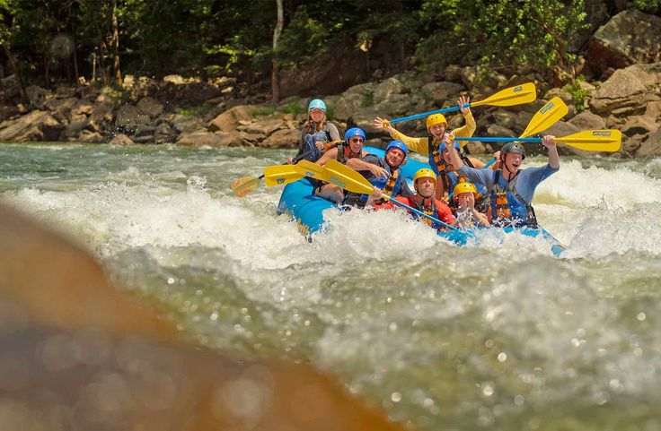
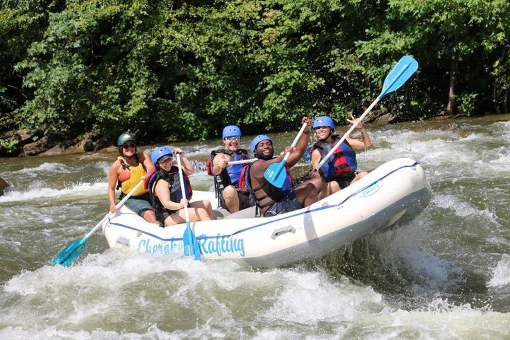
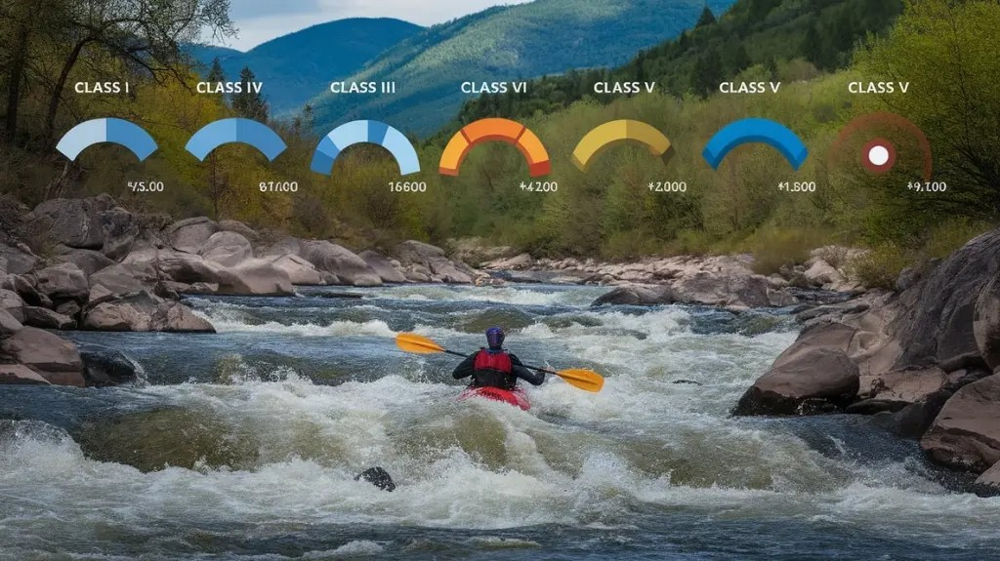
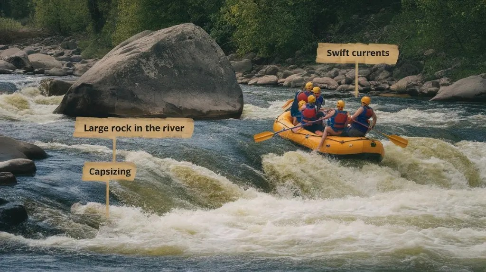
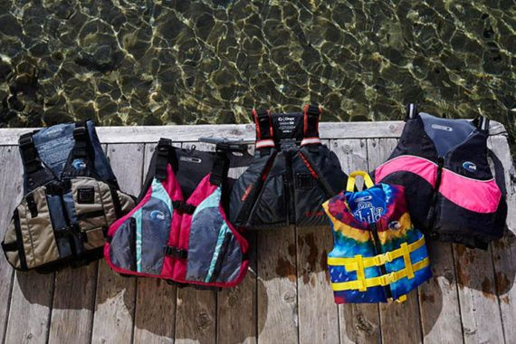
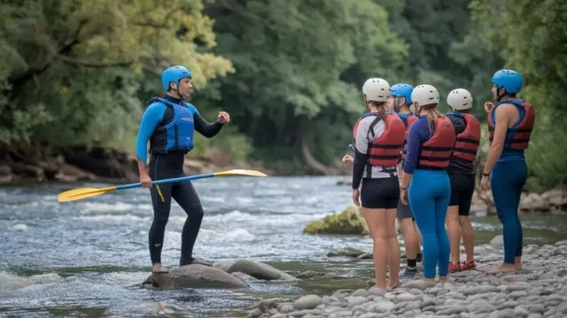
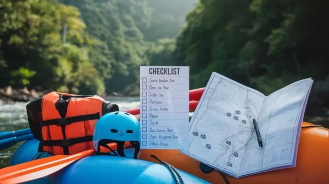
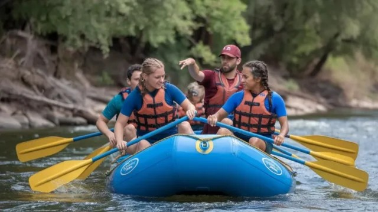
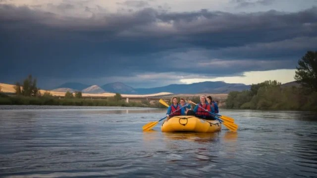
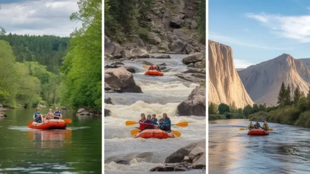

Experience Thrill Like Never Before
Exploring the Thrills and Dangers of Rafting: A Safety Guide
Special Considerations for Different Types of Rafting Trips
Gentle rapids like Class I-II provide a safe and enjoyable environment for families and beginners. The serene waters and minimal obstacles make them ideal for those seeking leisure over thrills.
For adrenaline seekers, Class III-IV rapids offer swift currents and moderate challenges. Choosing the right trip type ensures safety and enjoyment. Learn more about river classifications.
Rafting’s a wild ride—thrilling and terrifying all at once! Imagine navigating those roaring rapids while clinging to your paddle like it’s a life preserver—oh wait, it is! You’ve got to suit up with the right gear, like helmets and PFDs, or you might just meet a rock head-on, like my buddy did (ouch!). Plus, understanding river classifications helps you pick the right challenge, so you don’t end up in Class V without a clue. Professional guides are lifesavers, literally! So buckle up; safety comes first! Want to know more about keeping safe on the river? Keep going!
In this article [hide]
- Summary
- The Allure and Risks of Whitewater Rafting
- Understanding River Classifications and Their Implications
- Common Dangers in Whitewater Rafting: What to Watch For
- Essential Safety Gear: Your Lifeline on the River
- The Role of Professional Guides in Ensuring Safety
- Pre-Trip Preparation: Setting the Stage for a Safe Adventure
- On-River Safety Protocols and Best Practices
- Weather and Environmental Factors: Nature’s Wild Card
- Special Considerations for Different Types of Rafting Trips
Summary
- Whitewater Rafting offers an exhilarating experience, but understanding river classifications is crucial for choosing suitable trips and ensuring safety.
- Wearing Personal Flotation Devices (PFDs) and helmets significantly reduces Risks of capsizing and head injuries during rafting excursions.
- Professional guides provide essential safety briefings and possess knowledge of river conditions, enhancing participant safety throughout the trip.
- Appropriate gear, such as wetsuits and non-slip footwear, is vital to prevent hypothermia and injuries from slips on the raft.
- Awareness of environmental factors, like weather changes and water temperature, is essential for safe rafting experiences and emergency preparedness.
The Allure and Risks of Whitewater Rafting
When you experience the rush of whitewater rafting, you’re diving headfirst into a world of thrills and challenges. Imagine this: you’re bouncing through unpredictable currents, laughing with friends, and suddenly—bam!—you hit a rock. It’s all fun and games until someone gets a little too acquainted with the “dangers of rafting.”
But don’t worry! With the right safety equipment, like life jackets and helmets, you can minimize those risks. In fact, guided trips significantly reduce incident rates, making them a safer choice for explorers. It’s also important to know that the rafting fatality rate is lower than many everyday activities, such as grocery shopping rafter safety statistics.
Professional guides are your best friends here. They know the river like the back of their hand and conduct safety briefings that might just save your bacon. You’ll want to listen, trust me—those commands are vital to navigating the rapids!
And let’s talk about that cold water. It’s not just for polar bears; it can lead to hypothermia faster than you can say “rafting journey.” So, suit up with wet or dry suits, and keep those safety protocols in mind.
Understanding River Classifications and Their Implications
Understanding river classifications are essential for any rafter looking to match their skill level with the right expedition. Imagine you’re gearing up for a thrilling day on the river—what do you choose? Class I and II rapids are perfect for beginners. You’ll encounter small waves and minimal obstacles, making it a family-friendly option.
These levels are often ideal for first-time rafters and can be enjoyed with an experienced guide for added safety essential equipment includes inflatable rafts. Class III rapids kick things up a notch, with moderate waves that’ll test your steering skills. You might feel like a pro—until you hit a rogue wave and realize you’re not!
Now, if you’re an adrenaline junkie, Class IV rapids bring intense, turbulent waters. You’d better have some serious skills, or you might just find yourself swimming with the fish!
And then there are Class V and VI rapids, where only the most experienced rafters dare to tread. The inherent risks are high, and let’s be honest—if you’re not laughing at your own nervousness, you’re doing it wrong!
In short, understanding these river classifications helps you choose wisely, avoid rafting dangers, and follow essential safety tips. So, gear up, get educated, and let the river be your playground—but know your limits!
Common Dangers in Whitewater Rafting: What to Watch For
Navigating the exhilarating world of whitewater rafting comes with its share of dangers, so being aware of what to watch for is essential for your safety. First-time rafters, brace yourselves! Strong currents and those sneaky large waves can easily cause your raft to capsize, especially if you’re not wearing properly fitted personal flotation devices (PFDs) to keep you safe on the water safety gear essentials.So, grip that paddle like it’s your last slice of pizza and follow your guide’s instructions closely. Trust me, they know what they’re doing—most of the time!
So, grip that paddle like it’s your last slice of pizza and follow your guide’s instructions closely. Trust me, they know what they’re doing—most of the time!
Then there are underwater obstacles. You wouldn’t believe the rocks hiding just beneath the surface, ready to ruin your day. Stay alert and keep an eye on your guide; they’ll steer you clear. And let’s not forget about hypothermia. Yes, even in the summer, cold water can turn your fun day into a shivering nightmare. So, wear appropriate gear—wetsuits are your best friend!
Lastly, get familiar with rapid classifications. You don’t want to jump into a Class V rapid without a clue—unless you’re aiming for a reality show moment!
Essential Safety Gear: Your Lifeline on the River
Essential safety gear is essential for a successful rafting expedition, and you should never underestimate its importance. Think of it as your lifeline on the river—without it, you might as well be paddling a cardboard box! First up, Personal Flotation Devices (PFDs) are non-negotiable. It’s important to choose the right Type III PFD for your journey, such as a Type III PFD that balances comfort and buoyancy, ensuring you stay safe while paddling. They must fit snugly; you don’t want to be the one who floats away while everyone else is safely bobbing along.
Next, helmets are your best friends when it comes to protecting your noggin from those pesky rocks. You might think you’re invincible, but trust me, a helmet can save you from a world of hurt. And let’s not forget about wetsuits or drysuits. They’re not just for fashion; they keep you warm and cozy in chilly waters. Hypothermia is no joke, my friend!
When it comes to chilly waters, wetsuits or dry suits are a must. Trust me, hypothermia isn’t a fun souvenir from your trip. Don’t forget secure, non-slip footwear! Flip-flops might be cute, but they’ll have you sliding around like a cartoon character. And what about safety equipment? Pack rescue ropes, first aid kits, and communication devices. You’ll thank yourself later when you’re the hero who saves the day—or at least gets a good story out of it!
The Role of Professional Guides in Ensuring Safety
While you may feel excited about the thrill of rafting, having a professional guide by your side greatly improves your safety. Think about it—these guides undergo rigorous training in direction, safety protocols, and emergency response. They’re your safety net on the water, ready to tackle any situation that pops up. Their knowledge is essential, especially considering the importance of swiftwater rescue training in ensuring a safe experience on the river.
Before you hit the rapids, they provide safety briefings that cover everything from paddling techniques to what to do if you find yourself face-first in the river. Ever tried paddling in sync with a group? It’s like herding cats—without a guide, chaos reigns!
Your guide’s deep knowledge of river conditions is priceless. They monitor everything from group interactions to weather changes, adjusting routes to keep you safe and having fun. And let’s be honest, nothing kills the vibe like a surprise rock formation! Plus, open communication with your guide creates a supportive atmosphere. Have questions? Get them answered! You’ll feel more secure knowing someone’s got your back.
Pre-Trip Preparation: Setting the Stage for a Safe Adventure
Pre-trip preparation is the unsung hero of a successful rafting adventure. You wouldn’t show up to a wedding in flip-flops, right? So why would you hit the river without the right gear? Packing essentials like helmets, life jackets, and quick-drying clothing is crucial for comfort and safety. And let’s not forget about those pesky weather conditions! Checking forecasts and understanding seasonal changes can make or break your trip.
Imagine this: you’re all set for a sunny day on the river, but suddenly, a storm rolls in. You’ll be wishing you’d packed that rain jacket instead of your favorite Hawaiian shirt! So, do yourself a favor and check the weather before you head out.
Successful rafting starts long before you hit the water, and pre-trip preparation is key to your safety and enjoyment. First things first, make sure you attend a thorough safety briefing. You wouldn’t want to be that person who forgets how to paddle, right? Assess the river’s rapid classification and choose beginner rapids (Class I-II) if you’re new to this whole “expedition” thing.
| Essential Gear | Weather Considerations | Hydration Needs |
|---|---|---|
| Life jackets | Check forecasts | Bring extra water |
| Helmets | Know seasonal changes | Pack electrolyte drinks |
| Quick-drying clothing | Understand water levels | Don’t forget snacks! |
On-River Safety Protocols and Best Practices
When you’re on the river, sticking to safety protocols can make all the difference in ensuring a fun and secure rafting experience. First things first, don’t forget your personal flotation device and helmet. Trust me, they’re not just for show!
Following your guide’s instructions is essential, as they’re trained in safety measures and know the river’s quirks better than anyone!
Maintain a low and centered position in the raft. Think of it as your best balance pose—just without the yoga mat. This helps you stay stable when those waves get a bit feisty. And hey, communication is key! Use commands like “High-Side” to keep the raft upright and avoid a surprise dip in the water. Stay alert at all times. Unexpected situations can pop up faster than a fish jumping out of the water. If the raft flips, hang onto it like it’s your favorite snack and keep your feet up to dodge those pesky underwater hazards.
Weather and Environmental Factors: Nature’s Wild Card
Weather and environmental factors can make or break your rafting adventure. Picture this: you’re all set for a sunny day on the river, but suddenly, a storm rolls in. You’ll be wishing you’d packed that rain jacket instead of your favorite Hawaiian shirt! So, do yourself a favor and check the weather before you head out.
Rafting in unpredictable weather can turn an exciting escapade into a risky undertaking. You might be paddling along, feeling like a river god, when suddenly—boom! A thunderstorm rolls in, and you’re left wondering if you should’ve checked the weather forecast. Weather conditions can dramatically shift river levels and rapid classifications, making them more intense than a caffeinated squirrel. Flash floods? Yeah, they’re not just a myth—be aware! Cold water temperatures, even in summer, bring a sneaky hypothermia risk. Trust me, no one wants to become a popsicle while trying to maneuver around fallen trees and debris. And speaking of obstacles, those pesky rocks and logs might shift unexpectedly with changing river levels. You don’t want to find yourself dodging them like a contestant on a reality show.
Special Considerations for Different Types of Rafting Trips
Choosing the right rafting trip can make all the difference in your experience on the water. Whether you’re a newbie or a seasoned explorer, understanding the options is key. Class I-II rapids offer a gentle introduction—perfect for families or those seeking leisurely fun. On the other hand, if you’re craving adrenaline, class III-IV rapids will definitely keep your heart racing!
| Trip Type | Safety Measures | Ideal Group |
|---|---|---|
| Class I-II Rapids | Professional guides, life jackets | Families, beginners |
| Class III-IV Rapids | Advanced safety measures, helmets | Experienced rafters |
| Family-Friendly | Age-appropriate rapid classifications | Kids, family groups |
Conclusion
In conclusion, whitewater rafting is an exhilarating adventure that requires careful consideration of safety measures. Understanding river classifications, wearing appropriate gear, and following professional guides are essential for a safe and enjoyable experience. By being aware of the potential dangers and preparing adequately, you can embark on a thrilling journey while minimizing risks. So grab your paddle, embrace the excitement, and make unforgettable memories on the river!